EECS 492: Introduction to Artificial Intelligence
Graduate Student InstructorUniversity of Michigan
Winter 2024, Fall 2023
I am a second-year Ph.D. student in Computer Science at Johns Hopkins University, advised by Prof. Tianmin Shu and Prof. Daniel Khashabi. I’m honored to be named an Amazon AI PhD Fellow. Previously, I completed my M.S. in Robotics and a Graduate Certificate in Cognitive Science at the University of Michigan, advised by Prof. Joyce Chai, and my B.S. in Computer Science at UMass Amherst.
I work at the intersection of artificial intelligence and cognitive science, with the goal of making human-level machine intelligence and understanding how the brain works. My current research centers on Embodied AI and Continual Learning, particularly latent world models, test-time training, and persistent memory.
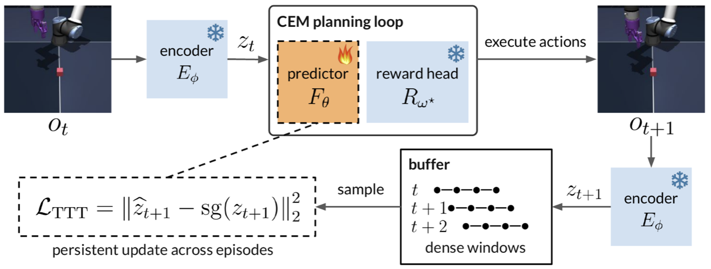
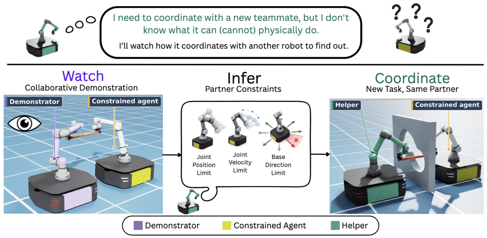
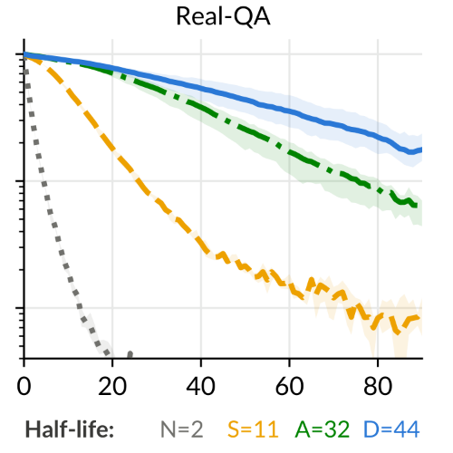
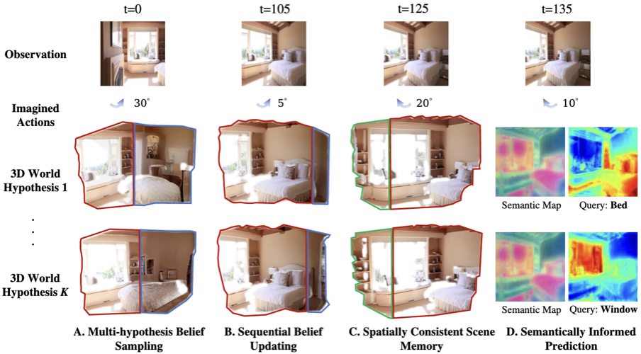
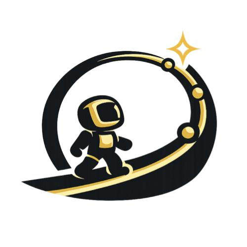
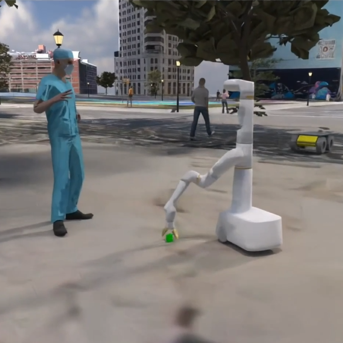
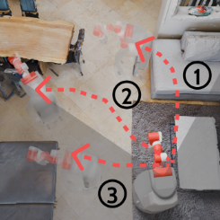
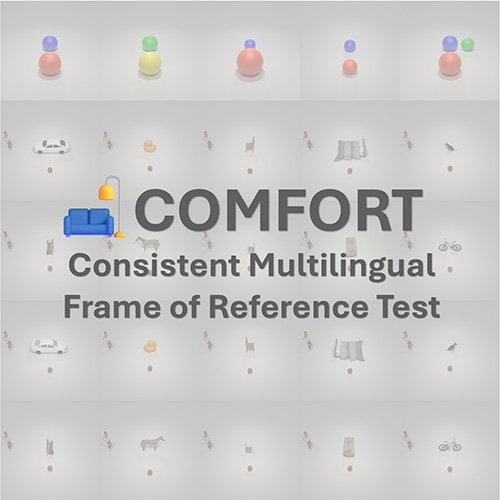
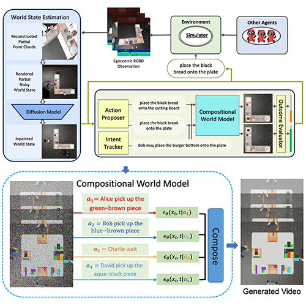
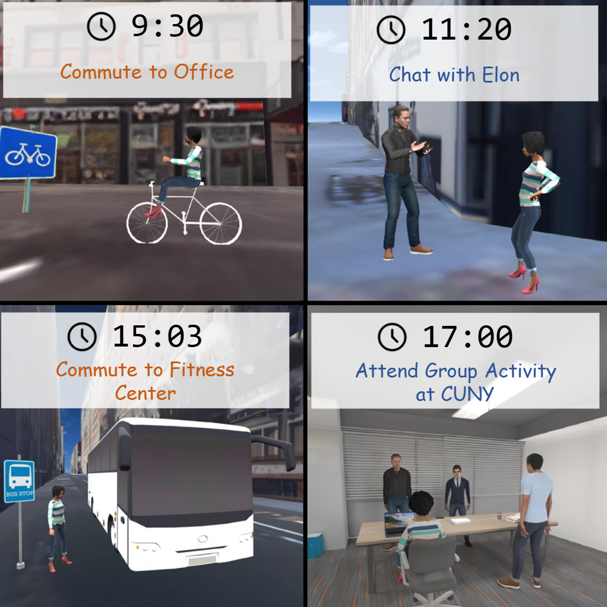
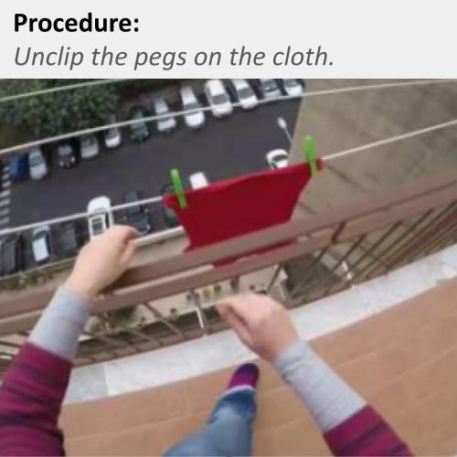
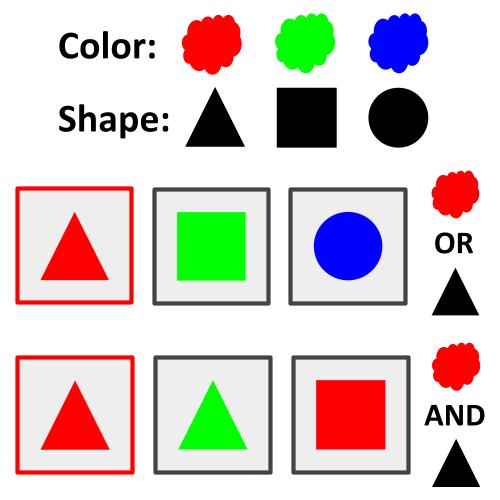
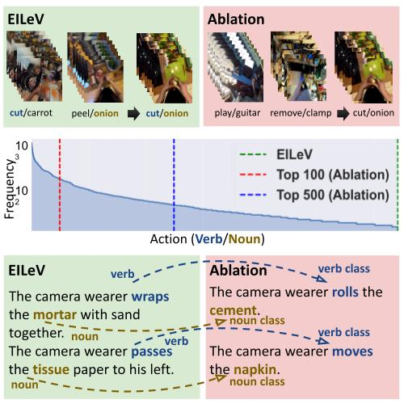
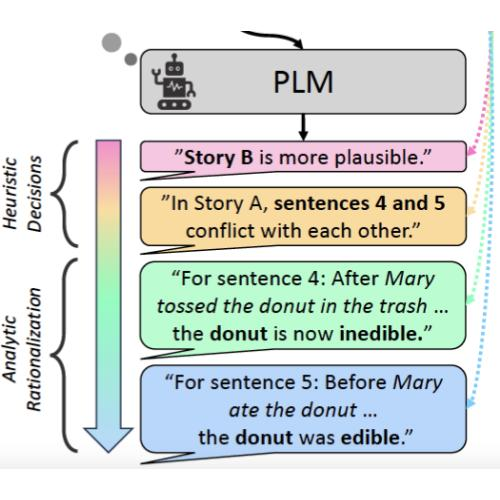